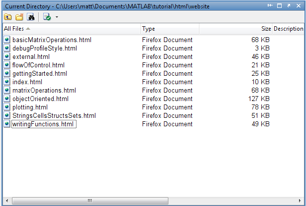

Filing system issues
In this chapter, we discuss issues related to finding and loading/ saving files and data.
Contents
Changing directories
You can change directory using the cd command
cd C:\kmurphy\webMirror\matlabTutorial\source\matlabTutorial
Error using ==> cd Cannot CD to C:\kmurphy\webMirror\matlabTutorial\source\matlabTutorial (Name is nonexistent or not a directory). Error in ==> files at 6 cd C:\kmurphy\webMirror\matlabTutorial\source\matlabTutorial
Inside the editor, The current directory window, unsurprisingly, displays the files in the current working directory. You can open it via the drop down menu Desktop->Current Directory if it is not already open. From here you can navigate the file system and search for files. Type F5 to force a refresh.

Matlab Path and Search Order
Matlab finds the functions you call by searching the Matlab Path in the order in which the directories on the path are specified. If multiple functions with the same name exist on the path, the version associated with the end of the pathlist is used. The easiest way to add new directories or view the existing path is to use the graphical pathtool available via file->set path or by typing pathtool at the command prompt.
%pathtool; % launch the path tool addpath(pwd); % add current directory to the path (done by default)
We can use the genpath() function to build a string containing the specified directory name and all of its subdirectories formed via recursive descent. We can then pass this string into addpath() for instance.
addpath(genpath(pwd)); % add all directories below current working directory
Sometimes we want to exclude certain directories, like CVS or SVN, or those containing the string 'old'. The function genpathPMTK acts like genpath, but excludes such undesirable directories.
addpath(genpathPMTK(pwd)); % add all directories below current working directory
When multiple files with the same name exist on the Matlab path, Matlab silently executes the one higher up on the path. You can check which version will be executed with the which() command.
which exp % which implementation will be used
which -all exp; % names of all implementations
Userpath
Matlab automatically sets up a default directory where you can save your own Matlab files; it opens this directory, whenever its started. You can view and change this default by typing userpath or say userpath c:\Users\matt\Matlab\ at the command prompt.
a = userpath % display,(or change) default save directory
Private Functions
Matlab searches for functions on the matlab path. It is possible to hide functions so they are not globally visible. There are two main mechanisms: private functions and packages. We will say more about private functions in the object oriented programming chapter. However, they can be used in non-OO code as well. Any functions you save into a directory named private will only be accessible by functions in the containing directory one level up (or the private directory itself). Thus, you can create functions with common names like sum or display, put them into a private directory and you will not interfere with existing implementations outside of your project.
Packages (2008a)
Packages can be used to partition the name space, which means that functions (or classes) of the same name will not clash with each other. Packages are directories beginning with the '+' symbol. Any functions (or classes) you place into these directories are then only accessible by first referring to the package name. Suppose I create a directory called '+lab' and put the function 'calc' into this directory. I would then call it with the syntax lab.calc() .
Packages can provide an easy way to organize your code and like private directories, let you reuse common function names. You can temporarily import a package, (meaning you do not have to use the dot syntax) with the import command, i.e. by calling say import lab .
As of 2008b, the only built-in package (that I am aware of) is containers, which contains a class called map which implements a hash table. Click here for details.
Startup File
You can specify commands to execute every time Matlab starts by creating a file on the Matlab search path with the name startup.m and writing the commands there. On systems running Windows XP, you can store the file in a place such as 'C:\Program Files\MATLAB\R2008a\bin'. For example, my startup.m file contains the following:
cd C:\kmurphy\webMirror\matlabTutorial\source\matlabTutorial addpath(genpath(pwd)) format compact dbstop if error
The first line goes to the specified directory. The second line adds all subdirectories below the current one to the path. The third line reduces the amount of white space used to display matlab output. The fourth line enters the debugger if there is an error.
Preferences
Instead of creating a startup.m file, you can edit properties under File->Preferences. For example, the equivalent of typing 'format compact' is to select File->Preferences->Command Window->Text Display->Numeric display->compact. Also, you can edit File->Set Path to add directories to your path. Once you have edited your path in this way, the relevant directories will be automatically added every time you run matlab.
Running Matlab in Batch Mode
Matlab can be run in batch mode, specifying commands for it to execute as soon as it begins, with the -r "command" switch. Commands are separated via semicolons and can be listed directly, or placed in a file with a .m extension and called like this: Matlab -r "myscript". To write the output to a file, include the following switch: -logfile "logfilename". If you want Matlab to quit when its finished executing the script, add the exit command at the end. Make sure Matlab can find the m-file you are trying to execute by placing it somewhere on the Matlab path. You can get rid of the opening splash screen with -nosplash and on unix systems bring up a Matlab command window right at the command prompt with the -nodesktop switch.
File Input & Output
Input and output in Matlab is relatively easy and can be done with a few useful functions. We describe these first and show examples at the bottom of this section.
The dlmread() is very useful for importing ascii delimited data into Matlab. You simply specify the filename and optionally the delimiter, although it can usually figure this out. To write data to a delimited file, use the dlmwrite() function.
You can also use the built in import wizard by typing uiimport at the command prompt. This is particularly useful when you have data stored in the windows clipboard, copied from some third party program.
If you are reading text from a file, try the textscan() function. You first have to open the file, however, with fopen() and then close it when you are done with fclose(). You can find an advanced worked example here.
To write arbitrary data, including text, to a file, use the fprintf() function in conjunction with fopen() and fclose(): fopen() returns a file id, which you then pass as the first argument to fprintf(). If you do not specify a file id, fprintf() prints the data to the command window. We discuss the formatting options available with this function here.
For more information on, say, the textscan function type doc textscan at the command prompt.
Here a a number of examples.
A = rand(20,40); % create a random matrix dlmwrite('testData.csv',A); % write to a file as a comma separated list B = dlmread('testData.csv'); % load it back in C = 'We will write this string to a file'; % create some text. fid = fopen('hello.txt','w'); % open a new file for writing fprintf(fid,C); % write it to a file fclose(fid); % remember to close the file fid = fopen('hello.txt','r'); % open with read access D = textscan(fid,'%s'); % read it back in. %s to expect strings D{:} % show the contents of D fclose(fid); % remember to close the file. % You can save and load variables as follows save example % save all the variables to a .mat file load example % load them back in save('example.mat', 'A', 'B') % just save speciied variables clear all %
Input from keyboard
There are several ways to get interactive input from the user. The simplest is the input command, which gives the user a text prompt and then waits for input from the keyboard.
%R = input('did you understand? y/n', 's')
You can also ask the user for input with a graphical window
%answer = inputdlg('What would you like for dinner?');
You can also create a window with a list of options to click on. The index of the chosen entry is returned.
%options = {'Chicken','Beef','Fish','Pasta'}; %message = 'Here are your options:'; %[selection, ok] = listdlg('PromptString',message,'ListString',options); %
Some functions for manipulating file names and directories
Note that filenames are not allowed to have - (minus sign) in them: use _ (underscore) instead. Directories with a @ sign in front of them are private. Directories with a + sign in front of them are packages. Here are a few useful functions for manipulating filenames.
Parse a filename
sfile = ['C:/temp','tmp.txt']; [pathstr, name, ext, versn] = fileparts(sfile)
Create a filename from parts in an operating-system neutral way
f = fullfile('c:','windows','temp','myfile.tmp')
Get get the file separator for this OS (\ for windows, / for unix)
sep = filesep
get a struct holding directory info.
dinfo = dir
display the root Matlab directory
b = matlabroot
list all of the m-files in the current directory
allfiles = what;
check if the specified file exists
exist('writingFunctions','file');
Memory mapped files
If your datafile is too large to load into memory in one shot, you can create a memmapfile object. This will let you access the data like a regular array, with standard indexing notation, without having to load it all in at once. Instead, parts of the file will be read on demand, transparently to you. Details can be found here. A worked example on how to use this to analyse the CG content of the whole human genome can be found here